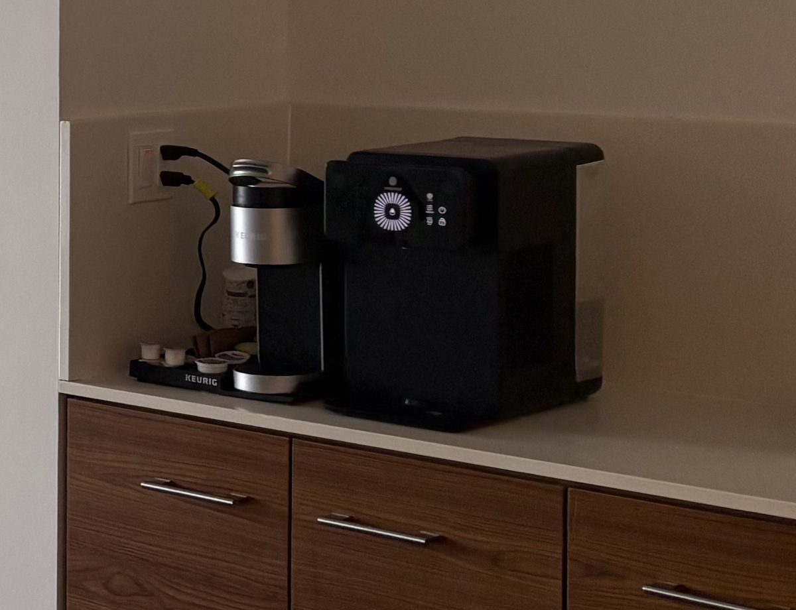
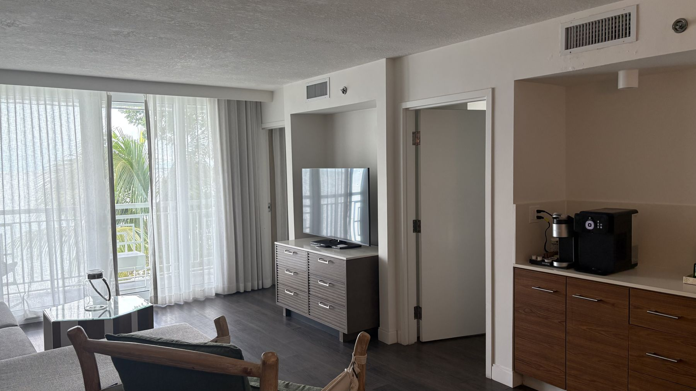

1
Unpack and place it next to the Keurig
- Place the Nano on the counter to the right of the coffee machine, as in the photo, on a flat, stable surface with its drip tray in place.
- Plug it straight into the wall outlet (grounded, 3-prong). No extension cord or power adapter.
- Leave about 8 in (20 cm) of open space around the fan so it doesn't overheat.
- A few drops of water inside a new unit are normal. Every unit is water-tested at the factory.


Hardware check: is the WiFi light already on?
Right after plugging in, before you pair it, look at the WiFi icon on the touch panel. Is it already lit white? Check this on every unit; we want to know if it happens across the board.
Anything else (blinking, another colour)? Write it in the sheet's Comments.